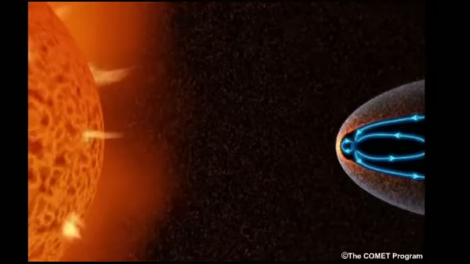
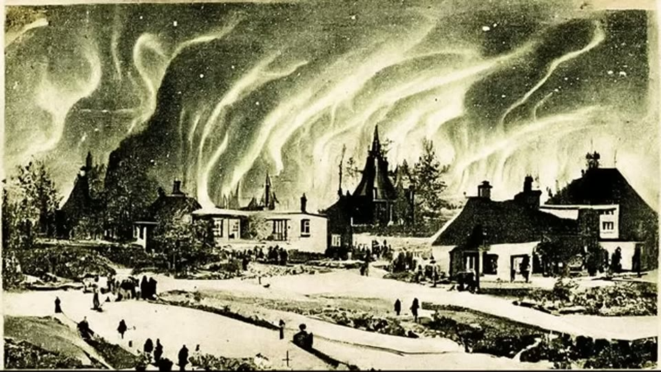

Curious Being
Solar Micronova: Could the Sun Periodically Destroy Civilizations?
Tina · 26 min · watch on YouTube · summarised 2026-09-28
The hypothesis under examination belongs to Ben of Suspicious Observers: that periodic solar micronovae blasted the Earth, "unlocked the crust from the mantle" and produced catastrophic tsunamis and earthquakes, ending advanced civilisations on a cycle. She was asked for her assessment by a viewer she thanks as David, and she sets out what she will test: whether the Sun can go micronova; whether solar plasma can move the crust; what these storms actually damage; whether that is enough to end a civilisation; and what can be done about it.
Can the Sun go micronova?
01:11–03:08 No, and the reason is definitional rather than argumentative.
A micronova is a thermonuclear explosion on the surface of a white dwarf, about a millionth the strength of a nova. It happens in a specific arrangement: a white dwarf with a strong magnetic field paired with a low-mass companion star. The dwarf's gravity strips hydrogen from the companion; the gas funnels to the dwarf's magnetic poles; pressure and temperature rise until fusion runs away. Each event burns material equivalent to one large asteroid, and from Earth it looks like a burst of light lasting about ten hours.
The Sun is neither a white dwarf nor in a binary system. It will become a white dwarf in about six billion years; a supernova would need roughly ten times its mass.
What the Sun can do is throw plasma, and large discharges are recorded in tree rings and ice cores. She names Dr Anthony Peratt as holding that disastrous plasma discharges have recurred at intervals.
Can solar plasma shake the ground?
03:57–06:14 The proposal is that plasma striking the surface could fuse rock, incinerate material, melt ice caps and unlock the crust.
Her answer is no while the magnetosphere, ionosphere and atmosphere are in place. Solar blasts do damage, but cannot deliver enough heat to fuse rock or melt an ice cap. On earthquakes, the relationship has been looked for for decades and never demonstrated: flares and magnetic storms wax and wane on the Sun's 11-year cycle, and earthquakes show no such periodicity.
She then handles the one paper that goes the other way, fairly. A 2020 study proposed the first strong — and disputed — correlation between solar eruptions and large earthquakes, from twenty years of proton density and velocity data. But its authors stress that proton density would act as a further, small trigger on faults already critically loaded, added to the main cause, which is tectonic stress.
What solar storms actually do
06:22–13:12 The best-explained stretch, and it is ordinary physics.
Coronal mass ejections are bubbles of plasma threaded with magnetic field, released over hours — about one a week at solar minimum, two or three a day near maximum. Normally the only thing anyone notices is the aurora.
The Carrington Event of 1859 is the benchmark. Sunspots grew through August; two major CMEs struck consecutively at the end of August and the start of September, with two bright flares. Auroras were reported in both hemispheres — from Havana and Florida on 29 August and 2 September. Telegraph systems went down across Europe and North America for eight hours or more, lines surged, and operators were shocked by their equipment.
And the detail that makes it real: operators in Portland and Boston unplugged their batteries and worked perfectly on the current in the air alone, as did one in Baltimore and one in Melbourne on a 50 km line. No African or South American lines were running; the single Asian line, in India, reported no trouble, which she attributes to its lower latitude and the sedimentary soil near Mumbai.
Then the check that matters. No tsunamis were reported in 1859. Two lower-magnitude earthquakes were recorded, in eastern Russia and Turkey, neither in the top sixty of the nineteenth century. The years either side had no major earthquakes or tsunamis at all.
The largest solar storm in the last 200 years seems to not relate to any earthquakes or tsunamis.
Later events follow the same pattern: 1921, 1960, 1972 (North American power and communication disruption, satellite problems), 1989 (the Quebec blackout), and 2022, when a flare destroyed 40 Starlink satellites after SpaceX did not check the space weather forecast.
Why wires and not rocks 11:29–13:12. Solar storms induce an electrical current in the ground — geomagnetically induced currents, GICs. When a storm hits, the magnetosphere reacts "kind of like a bell getting smacked by a hammer", the surface field moves and vibrates, and any conductor sitting in a changing magnetic field has a current induced in it. The fields are powerful but diffuse, so it takes a really long wire to accumulate destructive power: long power lines, long telegraph lines. Those overheat, melt, short, and take out the transformers attached to them — and without transformers the grid is down.

What a solar storm does when it reaches Earth — the coupling that induces currents in long conductors.

The largest solar storm of the last two centuries, as people at the time saw it.
The observation that turns the hypothesis around
13:12–13:48 It follows from everything above.
Because solar storms are most destructive to satellites, telecommunications and power grids, they would do far more damage to a modern society than to an ancient one.
If a solar plasma event actually reset a civilization — that civilization would more likely have been a pretty advanced one with electrical power and communication systems similar to what we have today.
The Miyake events
13:48–15:30 The bigger class of storm, and the record that lets us count them.
A Miyake event is an extreme solar particle event, identified by spikes of carbon-14 in tree rings together with beryllium-10 and chlorine-36 in ice cores, all independently dated. Since the class was recognised in 2012, nine have been identified in the last 15,000 years, the most recent in 993 CE — roughly one every one to two thousand years.
Their size, from the carbon-14 comparison: the 774–775 CE event was about 20 times the normal variation in solar activity and ten or more times the Carrington Event. The largest known Miyake event, about 14,300 years ago, was roughly twice those, so over twenty times Carrington.
Again, no historical documentation on major earthquakes or tsunamis exists in either period.
The isotope record itself is never shown. The nine events, their dates and their relative sizes are narrated over a stock photograph of a tree stump and an artist's reconstruction of Byzantine Constantinople.
And the decisive point: human society did not end during any of the nine. Ancient people had no long transmission lines, so the storms' main effect had nothing to work on.
The genetic check follows the same line 16:49–17:57. The end of a global civilisation should show as a population bottleneck. There is one in the last 500,000 years, between 20,000 and 15,000 years ago — before the largest Miyake event at 14,300, with no decline during it. So the bottleneck has nothing to do with the biggest solar storm known. And one bottleneck means at most one reset, not a cycle of them.
Could it end us?
18:09–25:11 Her answer is that it would be traumatic and not fatal, and she argues it in detail.
Not everywhere would be hit equally — the field draws charged particles toward the poles, so high-latitude countries are most exposed and equatorial regions might escape. And even granting the extreme case of every grid, cable and network down:
- Critical infrastructure is legally required to hold emergency power — generators, deep-cycle batteries, flywheel storage, fuel cells. Telecoms, hospitals, data centres, airports and food production must have generators; so do many police and fire stations and high-rise buildings.
- The knowledge does not vanish. Technicians, professionals and books remain. Petrol, diesel and propane equipment keeps working. Most electronics have no long wires and would not burn out.
- Recovery would be regional and slow rather than never. Better-supplied areas replace transformers first.
She cites a 2017 NBC article for the preparations already made: the Department of Homeland Security's Recovery Transformer program, designing rapidly deployable transformers; the Department of Energy's "strategic transformer reserve"; capacitor banks to absorb and dissipate excess energy; improved flywheels to drain surplus current into movement and heat; and dampening devices.
And forecasting is the real defence. NASA and the Space Weather Prediction Center monitor solar activity and issue warnings; SWPC publishes three-day forecasts; polar flights can be rerouted and satellites put into safe mode. NASA's early-warning AI models, she reports, may give about 30 minutes' notice for a particular area. Between three days and thirty minutes is enough to disconnect transformers and shut grids down — and storms last minutes to hours, the Carrington Event under a day in most regions.
What you can check yourself
- What a micronova is, and what it requires, is textbook astrophysics: a white dwarf, a binary companion, a magnetic funnel. Whether the Sun is either of those is not a matter of opinion.
- The Carrington Event is one of the best-documented space weather episodes in history, and the telegraph accounts — including the operators working on induced current with the batteries disconnected — are in the contemporary record.
- The seismic check is repeatable. Catalogues of nineteenth-century earthquakes and tsunamis exist; whether 1858, 1859 and 1860 contain anything remarkable is a lookup.
- The 1972, 1989 and 2022 events are all documented, the Quebec blackout and the Starlink losses especially well.
- Miyake events are a published, dated series — nine in 15,000 years, the most recent 993 CE — and the isotope method is described well enough to follow.
- The relative sizes are published: 774–775 CE at ten or more times Carrington, the 14,300-year event at roughly twice that again.
- Geomagnetically induced currents are standard electrical engineering, and the reason long conductors are the vulnerable part follows from it.
- The DHS Recovery Transformer program and the DOE strategic transformer reserve are real programmes that can be looked up, as can SWPC's forecast products.
What the video does not settle
- Peratt is named and not engaged. The actual evidential claim on that side is his work reading petroglyphs as records of plasma events, and it is not examined here — only the mechanism is.
- The bottleneck argument uses the same curve as the collapse video, where the quantity plotted is effective population size rather than a head count. "One bottleneck in 500,000 years" comes from it.
- The recovery scenario rests on one 2017 news article. How long transformer replacement takes, how many spares exist and whether generator fuel can be resupplied with the grid down are not sourced.
- The two warning times are not reconciled. Three days and thirty minutes are both given, and why they differ is not explained.
- "No tsunamis reported in 1859" is an absence in the nineteenth-century record. How complete that record is outside the North Atlantic and Mediterranean is not discussed.
- Most sources are unnamed — the 2020 earthquake correlation paper, the Miyake literature, the NASA AI warning models — with the NBC article the exception.
- The Miyake section has no evidence on screen. It is the most checkable material in the video and it is illustrated with a stock tree stump and a painting of Constantinople. No carbon-14 record, count or date appears in the frames.
- The inversion depends on the damage mechanism being induced currents. "Only a wired civilisation could be destroyed by a solar storm" follows if GICs are the mechanism. Crust-unlocking is addressed in a separate passage.
See also
Did Pole Flips and Solar Storms Wipe Out Advanced Prehistoric Civilizations? — the follow-up, answering the objections this video drew.
What Caused the Fall of a Previous Advanced Civilization? — the bottleneck she uses here, and the collapse she does accept.
Flash-Frozen Mammoths — the same approach applied to another catastrophist fixture.
Was an Advanced Civilization Wiped Out by a 12,800-Year-old Comet at Younger Dryas? — the impact hypothesis, tested and rejected.
The Pyramid Chemical Plant Theory — the other entry where she is asked for her take on a named researcher's theory and gives it in full.